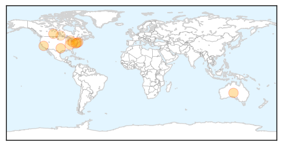
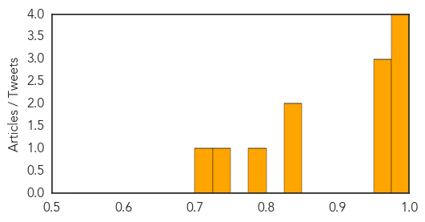

Influenza
30-Day Web Trend
4 alerts, 16 warnings

30-Day Twitter Trend
2 alerts, 0 warnings

Article Locations
Article Confidences
Top Articles:
- 0.998
- The Rocky Mount Telegram
- 0.998
- To Flu or Not to Flu, That (Could Be) Congestion!
- 0.998
- Influenza is Far Worse than Ebola
- 0.984
- Health unit prepares for flu season
- 0.972
- Three hospitals top state flu vaccination rates, one far below
- 0.969
- Ebola? Look out for another debilitating virus
- 0.968
- Flu shot clinics start in Saskatoon - Saskatoon
- 0.849
- Clinics for free flu shots start Wednesday in Springfield
- 0.840
- WFMJ.com News weather sports for Youngstown-Warren Ohio
- 0.778
- Saskatoon Health Region hopes to increase flu-vaccination numbers
- 0.729
- Eastern Michigan University vaccinating students for the flu
- 0.714
- Health-care providers gear up to meet flu season with vaccinations - Winnipeg
Top Tweets:
-
No tweets found for Oct 14, 2014
Measles
30-Day Web Trend
1 alerts, 0 warnings
30-Day Twitter Trend
0 alerts, 0 warnings

Article Locations

Article Confidences

Top Articles:
-
No articles found for Oct 14, 2014
Top Tweets:
-
No tweets found for Oct 14, 2014